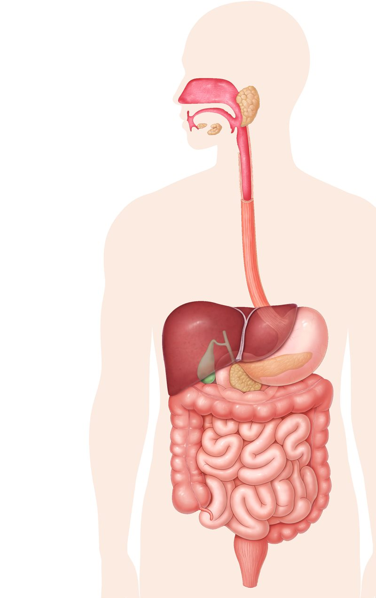
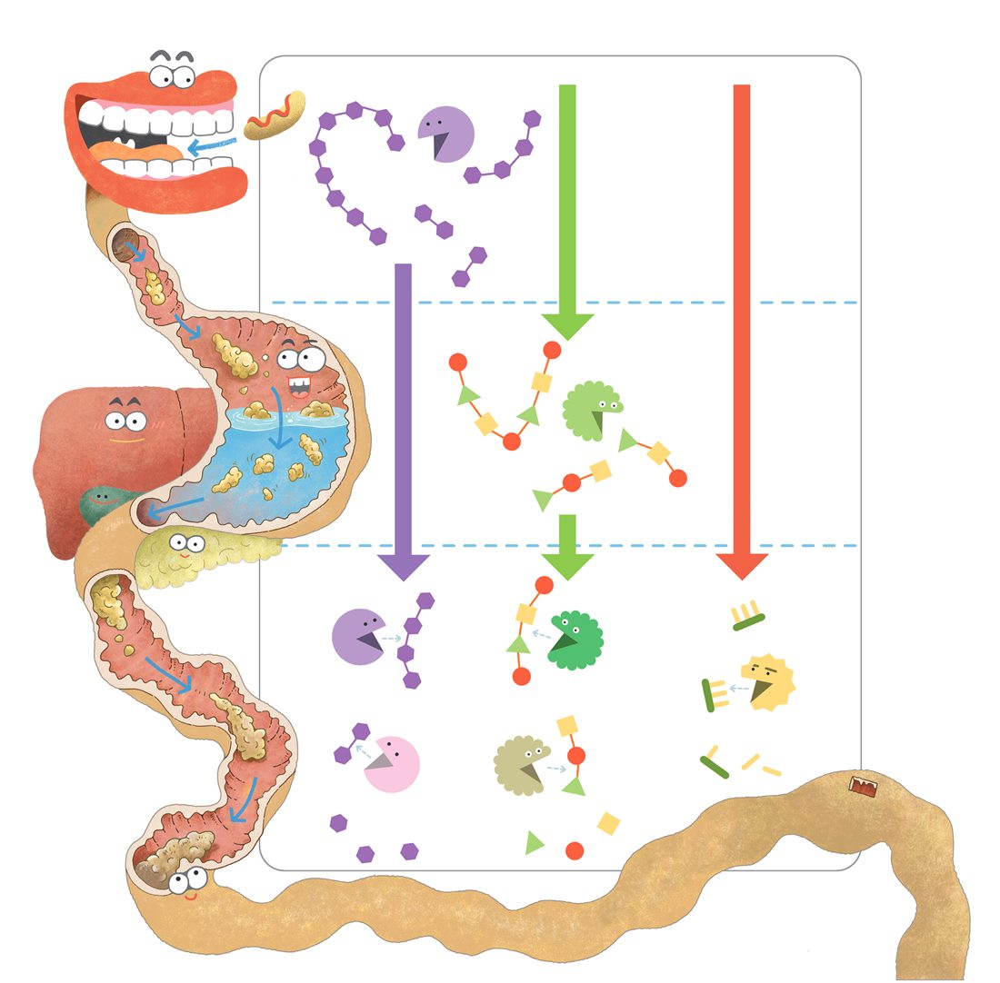
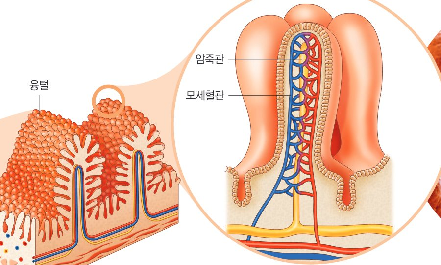
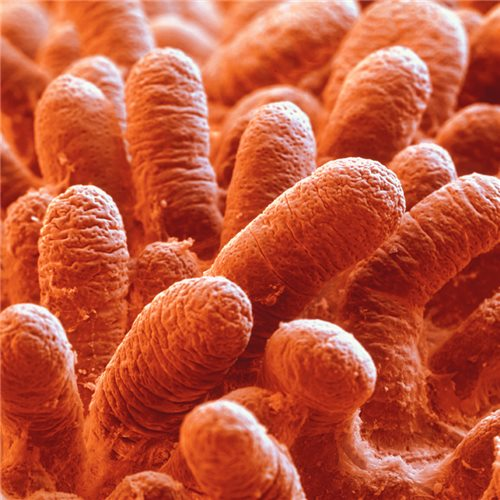

오늘 먹은 급식은
어디로 갔을까?
소화계 기관과 소화효소 스티커를 직접 붙이면서, 음식물이 우리 몸에서 어떻게 작게 쪼개지고 흡수되는지 알아봅시다.
생각 열기
5분밥을 오래 씹으면 왜 단맛이 날까? 급식 밥을 꼭꼭 씹어 보세요. 처음엔 별맛이 없는데 점점 달아져요.
힌트 보기
큰 영양소는 왜 쪼개야 할까? 레고 성을 통째로 좁은 문으로 넣을 수는 없어요. 블록을 하나씩 떼어야 하죠.
힌트 보기
음식물이 지나가는 길을 말해 볼까? 입에서 시작해서 어디를 지나 몸 밖으로 나갈까요?
힌트 보기
스티커 활동 1 · 소화계 기관 붙이기
10분스티커를 끌어서 그림의 알맞은 빈칸에 붙이세요. 스티커를 눌러서 고른 다음 빈칸을 눌러도 붙일 수 있어요. 붙인 스티커를 누르면 그 기관이 하는 일을 볼 수 있어요.
스티커 판

그림 출처: 비상교육 중학교 과학 2 교과서 그림 6-1 (195쪽)
스티커를 붙이면 여기에 그 기관이 하는 일이 나타나요. 👀
스티커 활동 2 · 소화효소 지도 완성하기
12분왼쪽 교과서 그림을 보면서, 각 장소에서 어떤 소화효소가 어떤 영양소를 분해하는지 지도를 완성하세요. 아무 소화도 일어나지 않는 칸에는 ✕ 스티커를 붙이세요. 소화효소가 아닌 도우미도 하나 숨어 있어요!
스티커 판

녹말 단백질 지방 입 위 작은창자그림 출처: 비상교육 중학교 과학 2 교과서 그림 6-2 (198쪽)
팩맨 모양 캐릭터가 소화효소, 사슬 모양이 영양소예요.
| 장소 | 녹말탄수화물 | 단백질 | 지방 |
|---|---|---|---|
| 입침 | 소화효소 ▼ 분해 결과 |
||
| 위위액 | 소화효소 | ||
| 작은창자이자액·쓸개즙 | 소화효소 | 소화효소 | 도우미소화효소 |
| 최종 소화 산물 |
+ |
스티커 활동 3 · 영양소는 어디로 흡수될까?
6분소화된 영양소는 작은창자에서 흡수돼요. 작은창자 안쪽 벽 그림에 이름 스티커 3개를 붙이고, 오른쪽 이야기 카드를 열어 보세요.
스티커 판

그림 출처: 비상교육 중학교 과학 2 교과서 그림 6-3 (199쪽) · 왼쪽: 작은창자 안쪽 벽의 단면, 가운데: 융털의 구조

생활 속 소화 이야기
5분카드를 눌러 뒤집어 보세요. 먼저 친구와 답을 예상해 본 뒤에 뒤집으면 더 재미있어요!
확인 문제
5분답을 누르면 바로 정답과 풀이가 나와요. 처음 고른 답으로 점수를 매겨요.
정리 · 핵심 질문에 답하기
2분음식물이 지나가는 길
🍙🍬 주먹밥과 포도당 사탕은 각각 어떤 과정을 거쳐 세포에 에너지원으로 공급될까?
배운 내용을 바탕으로 내 말로 써 보세요.